3 Contamination estimation with AuthentiCT
3.1 Contamination Estimation Methods
A number of methods are available to estimate contamination which use a variety of signals and are appropriate for different types of data. Here, we will focus on the case of ancient human samples with present-day human DNA contamination.
Three main signals are informative about the presence of contamination in aDNA datasets:
1. Differences in the DNA Sequence: Sites that differ between the genome of interest and likely contaminants can be identified when their genome sequences are known in advance. Contamination can be estimated by measuring the proportion of sequences that present differences at specific sites (Box A).
Example tool: contamMix
2. Deviation from the expected ploidy: Contamination can cause a sample to show unusual patterns of ploidy. For instance, heterozygous sites on the X or Y-chromosomes in males, or Y-chromosome sequences in females, are signs of contamination (Box B).
Example tools: X/Autosome coverage ratio, ANGSD, Schmutzi
3. Ancient DNA degradation patterns: The degradation of DNA leaves characteristic patterns that can be used to distinguish aDNA sequences from those from present-day DNA contamination. The most common damage in aDNA originates from cytosine-deamination (Box C).
Example tool: AuthentiCT
The figure below summarizes the classification of signals used to estimate contamination, as presented by Peyrégné (2020)
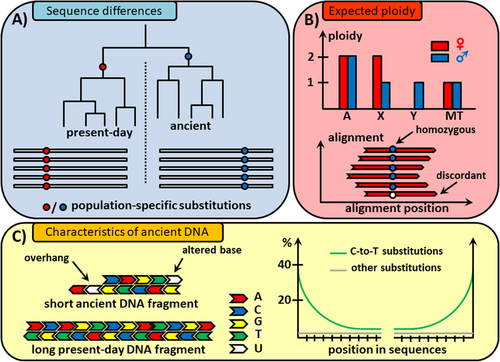
3.1.1 aDNA properties: Quick recap
Ancient DNA is typically fragmented into pieces shorter than 100 bp and exhibits miscoding base modifications that accumulate over time.
The most common miscoding lesions observed in aDNA are the results of cytosine deamination that converts cytosine (C) into uracil (U), which is then misread as thymine (T), or 5- methylcytosine into thymine. This leads to C-to-T substitutions in the sequence data.
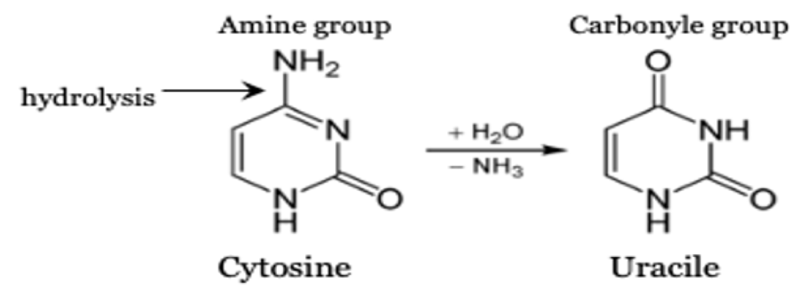
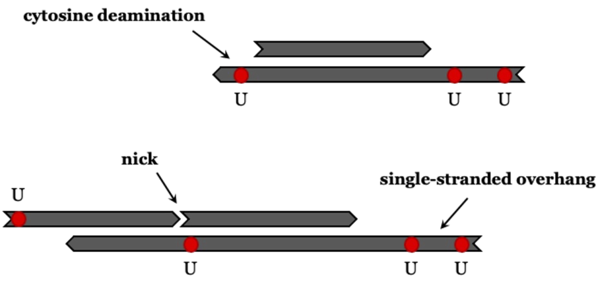
The deamination rate is higher for single-stranded DNA than for double-stranded DNA (Lindahl and Nyberg 1974). The prevalence of deamination-induced C-T substitutions increases with the age of the sample, and it is climate dependent (Kistler et al. 2017; Sawyer et al. 2012) .
💡 To estimate present-day DNA contamination, these properties need to be formalised in a model of aDNA damage..
3.1.2 aDNA Common Damage Models
1. Conditional substitution model (based on last positions)
Assumes independence between C-to-T substitutions at both ends (no correlation).
Cytosine deamination is used to filter out present-day human contaminant DNA, as this type of deamination occurs less frequently in such DNA. To estimate contamination, patterns of ‘regular’ substitution are compared with ‘conditional’ substitution patterns. The frequency of conditional substitutions is calculated by identifying fragments that show a C-T change at either the 5’ or 3’ end and then determining the C-T substitution rate at the opposite end. Frequencies derived from conditional substitution are presumed to be higher than those from ‘regular’ substitution. This method is used as a ‘conservative’ proxy to estimate the expected deamination in endogenous DNA. It was introduced by Meyer et al. (2016)
Let’s say we have sample X with damage rate of 30% at the 5’ end and 25% on the 3’ end, as illustrated below:
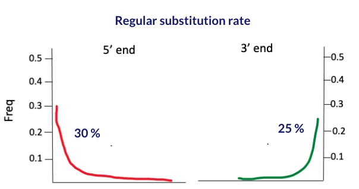
To calculate the conditional substitution rate at the 5’ end, we start by selecting only those reads that have a deamination signal at the 3’ end. hence maximizing it to a 100% rate. Similarly, to find the substitution rate at the 3’ end, we pick out reads that show a deamination signal at the 5’ end, aiming for the same 100% rate. The process is depicted in the figure below.
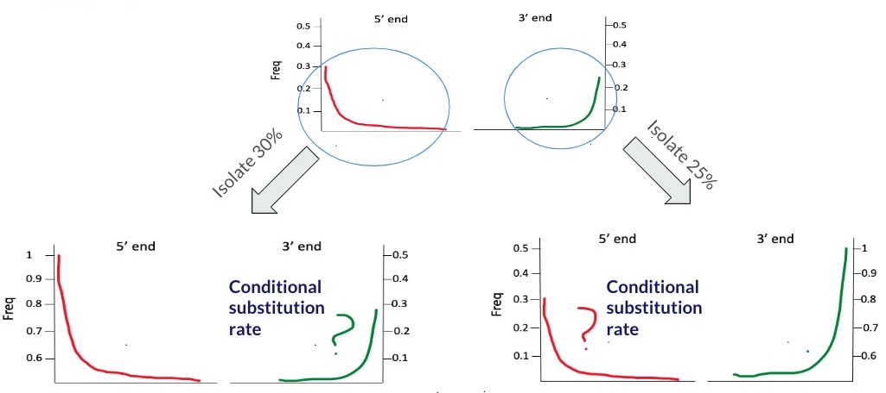
The table below summarizes the output of the calculation:
| regular substitution | conditional substitution | |
|---|---|---|
| 5’ end | 30 | 30 |
| 3’ end | 25 | 28 |
If conditional substitution rate is larger than regular substitution rate at both ends, this could indicate presence of contamination. This is due to the background of present-day contamination that dilutes the deamination signal.
Example
In Meyer et al. 2016, nuclear DNA sequences from femur XIII, a sample of the Sima de los Huesos (SH femur XIII) Middle Pleistocene hominins, showed regular C to T substitution frequencies of 12% and 17% at the 5’ and 3’ ends, respectively. When conditioned on C to T substitutions at the opposite ends of fragments, these frequencies dramatically increased to 55% and 62%, indicating the specimen contains a mixture of highly deaminated endogenous nuclear DNA and less deaminated human contamination. The output is outlined in the table below:
| regular substitution | conditional substitution | |
|---|---|---|
| 5’ end | 17 | 62 |
| 3’ end | 12 | 55 |
The conditional substitution rate does not provide a robust estimate; instead, it offers an indication of contamination. Therefore, it is considered as qualitative rather than quantitative method.
2. Non-conditional substitution model (based on pattern)
Unlike the conditional substitution method, which looks at two point estimates, the non-conditional substitution model—on which the AuthentiCT tool is based—relies on a complex model that learns the patterns of post-mortem damage.
AuthentiCT follows that model ⤵️
3.2 AuthentiCT tool
AuthentiCT is based on model that learns the patterns of post-mortem damage. It models all C-T substitutions, irrespective of their position in the sequence, and accounts for clusters of C-T substitutions in the internal parts of sequences.
3.2.1 Theory
How it works?
- Modeling C-to-T Substitutions: AuthentiCT models all C-T substitutions across the DNA sequence. It does not limit this analysis to substitutions near the ends of DNA sequences, where such changes are most expected, but also considers them throughout the sequence.
- Accounting for Clusters: While C-T substitutions occur predominantly at the ends of DNA fragments, they are also found in the internal parts. These internal clusters are not independent from each other.
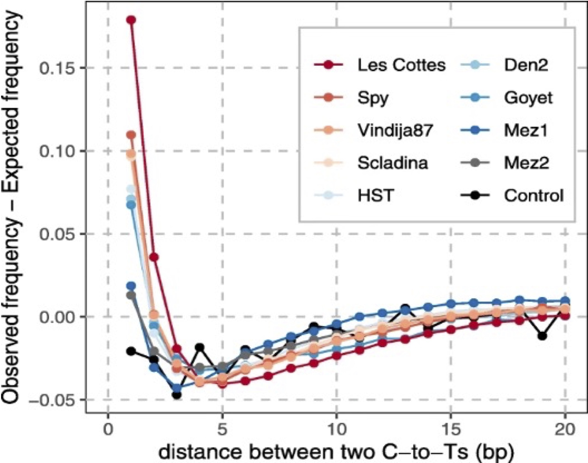
AuthentiCT uses a a hidden Markov model (HMM)—a statistical model for predicting a sequence of unseen state changes based on observed sequences—to jointly model all C-T substitutions.
- Observation: This refers to matches and mismatches to the reference, including deaminations, errors, and polymorphisms.
- Unobserved states: These are the DNA conditions not directly observed, such as single-stranded areas (including 3’ or 5’ overhangs, haplotypes) and double-stranded regions.
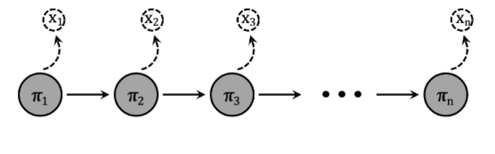
After evaluating each position within the DNA sequence, the model identifies three distinct single-stranded (ss) regions: inside the molecule, at the 5’ end, or at the 3’ end. It then calculates the probability for each model (contaminant vs. ancient) at the sequence’s end.
The model distinguishes between single-stranded and double-stranded parts of the DNA molecule using four hidden states to represent either double-stranded (ds) or single-stranded stretches. By compiling these probabilities across all sequences, AuthentiCT efficiently estimates the proportion of contamination.
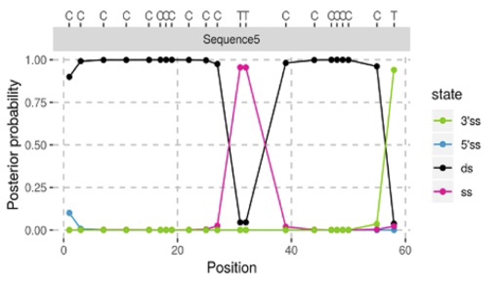
3.2.2 Applicability
AuthentiCT is applicable to any species, if suitable reference genome is available for alignment.
Limited to single-stranded libraries
Performs well for datasets of 10,000 or more sequences (less reliable for <1000) - bias decreases with longer sequences or higher GC contents.
Not applicable to libraries generated after treatments that alter deamination patterns, e.g., UDG.
It is not possible to run it with PMD-filtered data, since such data lacks the non-deaminated reads.
3.2.3 Method parameters
AuthentiCT overestimates contamination for low contamination rates.
Consistency between Shotgun (SG) vs capture (1240k) data.
Assumes the absence of significant levels of deamination in the contaminating DNA, which can lead to underestimating the proportion of contamination.
DNA fragments with different rates of damaged bases (differences in preservation, different treatments), may lead to an overestimate of present-day DNA contamination.
3.2.4 Running & Output
To install AuthentiCT, follow the instructions available at AuthentiCT GitHub Repository.
- Python Version: Requires Python 3.6 or higher.
Ensure the following dependencies are installed:
numpy(version 1.17.3)numdifftools(version 0.9.39)pandas(version 0.25.2)scipy(version 1.3.1)
Main commands:
deam2cont: Estimates the level of contamination from deamination patterns.deamination: Prints C-to-T substitution frequencies.
Script
#!/usr/bin/env bash
BAM=LGJ001_ss.A0101_rmdup #file name (deduplicated bam)
samtools view $BAM.bam | AuthentiCT deam2cont -o $BAM.deam2cont.out -m 25 -b 30 -
# -m mapping quality cutoff
# -b base quality cutoffor for multiple bam files
# Directory containing BAM files
BAM_DIR="/path/to/your/deduplicated_bam/directory"
# Iterate over all BAM files in the directory
for BAM_FILE in "$BAM_DIR"/*.bam; do
# Extract the file name without the extension
BAM_BASE=$(basename "${BAM_FILE%.bam}")
# Run the samtools view and AuthentiCT commands for each BAM file
samtools view "$BAM_FILE" | AuthentiCT deam2cont -o "$BAM_BASE.deam2cont.out" -m 25 -b 30 -
done
# -m mapping quality cutoff
# -b base quality cutoffOutput example
| | Parameter | Std.Err | Output Explanation |
|------------------|------------------|------------------|-------------------|
| e | 0.003659 | 0.000079 | Error rate: we expect around 1 or 2 mismatches every 1000 |
| rss | 0.663170 | 0.016033 | Rate of C-to-T substitutions in single-stranded regions \> damage rate |
| lo | 0.732971 | 0.003014 | Parameter of the geometric distribution modeling the length of single-stranded overhang |
| lss | 0.727519 | 0.036484 | Parameter of the geometric distribution modeling the length of internal single-stranded regions |
| lds | 0.001000 | 0.000091 | Parameter of the geometric distribution modeling the length of double-stranded regions |
| contm | 0.098113 | 0.011459 | Contamination estimate (rate from 0 to 1) |
| o | 0.626460 | 0.018110 | Frequency of 5' single-stranded overhangs |
| o2 | 0.657778 | 0.020543 | o2 is proportional to the frequency of 3' single-stranded overhangs |3.3 Practical examples
3.3.1 Consistency between Shotgun (SG) vs capture (1240k) data
Aim: We evaluated the consistency of AuthentiCT estimates between shotgun and 1240k-captured data derived from the same samples.
Dataset: consists of 1240k-captured sequences from individuals dating back to 3000 BP, showing low levels of contamination.
Outcome: We did not observe high discrepancies when comparing samples with high number of input reads and C-T damage (>30%). However, we observed higher SE for samples with low number of input reads (less than 10.000), mainly for SG data. The table below outlines the coverage and the C-T substitution rates for each samples.
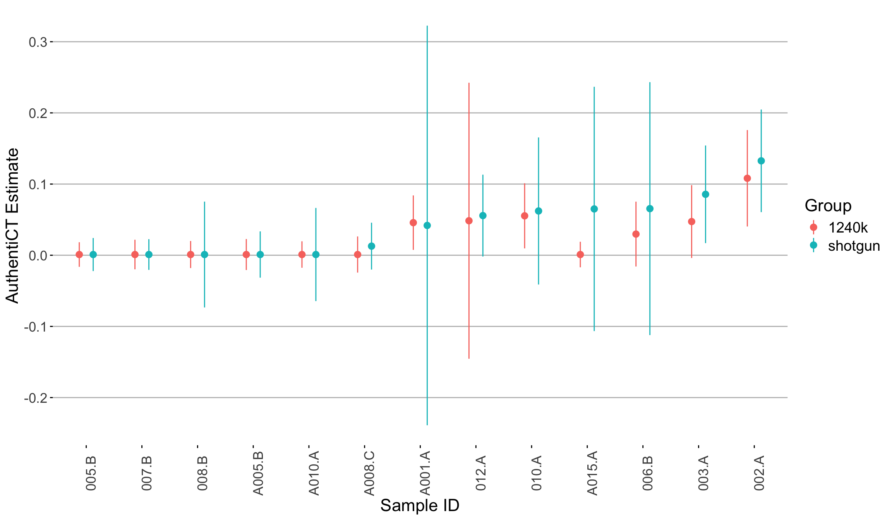
| Seq ID | SG_Nr. Mapped Reads Passed Post-Filter | SG_Endogenous DNA Post (%) | SG_5 Prime C>T 1st base | TF_Nr. Mapped Reads Passed Post-Filter | TF_Endogenous DNA Post (%) | TF_5 Prime C>T 1st base |
|--------|-----------------------------------------|----------------------------|-------------------------|-----------------------------------------|----------------------------|-------------------------|
| 002.A | 1,173,469 | 21.38 | 31.60% | 19,718,426 | 65.53 | 32.80% |
| 003.A | 85,840 | 1.58 | 40.10% | 13,387,538 | 40.04 | 40.90% |
| 005.B | 67,131 | 1.51 | 56.40% | 16,556,830 | 3.52 | 55.40% |
| 006.B | 1,896 | 0.05 | 47.80% | 33,820 | 0.09 | 51.00% |
| 007.B | 916,024 | 20.49 | 41.40% | 13,232,270 | 36.93 | 39.90% |
| 008.B | 5,595 | 0.13 | 57.00% | 74,134 | 0.24 | 59.20% |
| 010.A | 36,098 | 1.06 | 43.60% | 12,425,284 | 34.83 | 45.30% |
| 012.A | 522,067 | 10.01 | 42.00% | 17,379,143 | 52.79 | 41.90% |
| A001.A | 2,626 | 0.05 | 39.40% | 43,414 | 0.11 | 41.00% |
| A005.B | 72,628 | 1.69 | 38.50% | 3,624,986 | 8.99 | 38.50% |
| A008.C | 80,062 | 1.74 | 36.40% | 2,958,958 | 7.87 | 35.40% |
| A010.A | 12,212 | 0.28 | 52.00% | 198,887 | 0.63 | 50.70% |
| A015.A | 3,440 | 0.06 | 38.00% | 64,418 | 0.16 | 45.60% |3.3.2 Impact of sequence count used on AuthentiCT estimates
Aim: We evaluated whether lowering the sequence count for the deamination model in AuthentiCT’s -s option from the default 100,000 to 10,000 sequences—which speeds up the process—alters contamination estimates.
Dataset: Our analysis used 1240k-captured sequences from individuals dating back to the first millennium BC, varying in contamination levels.
Outcome: Our results indicate that a reduced sequence count speeds up analysis but may broaden standard errors and slightly alter contamination estimates.
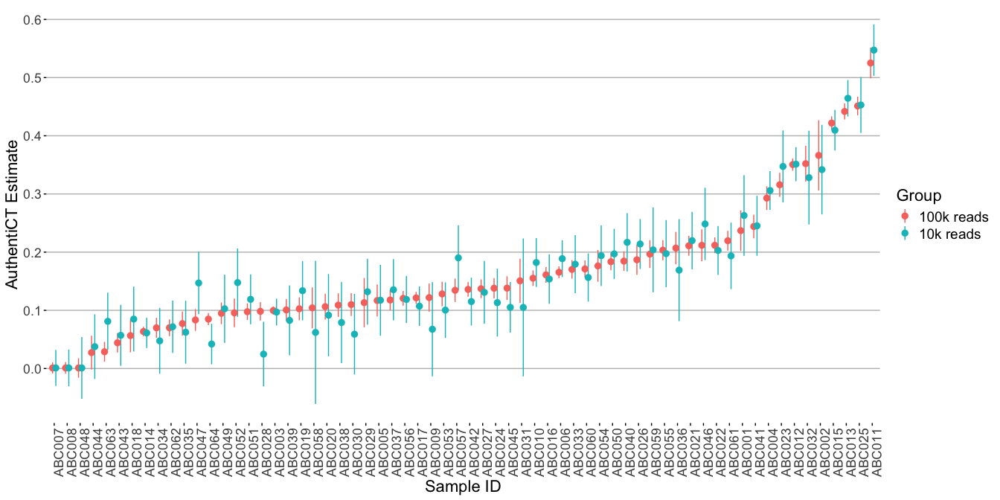
3.3.3 Impact of sequencing setup used on AuthentiCT estimates
Aim and dataset: We explored AuthentiCT estimates in samples that were single-end (SE) sequenced and paired-end (PE) sequenced. The mean read length for all the samples was between 45 to 50 bp (insert size), and the sequencing read length was 75 bp in both the SE and PE setups. The adapters were trimmed using AdpaterRemoval tool.
Outcome: The results indicate that AuthentiCT estimate ovaerall does not change with changing the sequencing setup.
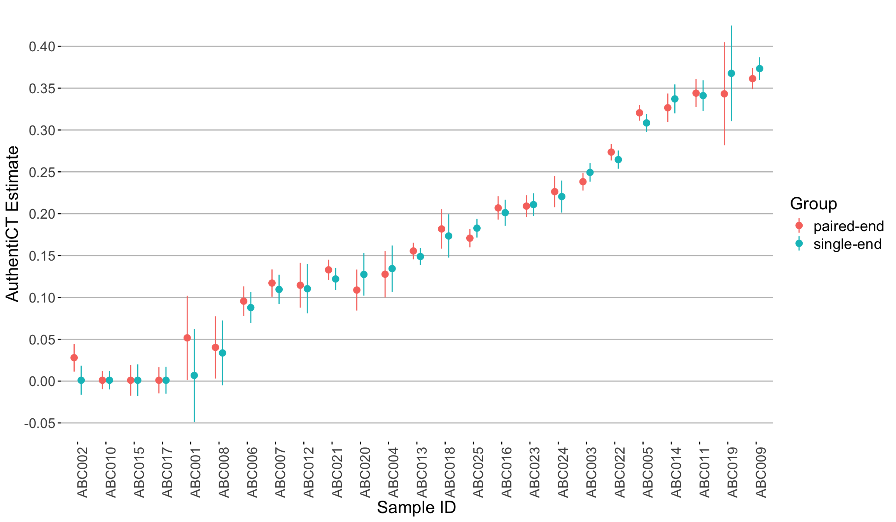
💡 Terminal end damage discrepancies in single-stranded libraries
During the preparation of single-stranded libraries, an adapter is ligated to the 3’ ends of the molecules. This step tends to introduce a small to moderate bias against the ligation of uracils, leading to a common observation: the terminal 3’ C-to-T substitution rates are typically 10-20% lower compared to those at the 5’ terminal ends.This bias is amplified in the presence of inhibitory substances in the DNA extracts, or if the library prep is saturated with large amounts of input DNA.
AuthentiCT compensates for these variances by accounting for the differences in the length of the single-stranded end and the frequency of this occurrence.